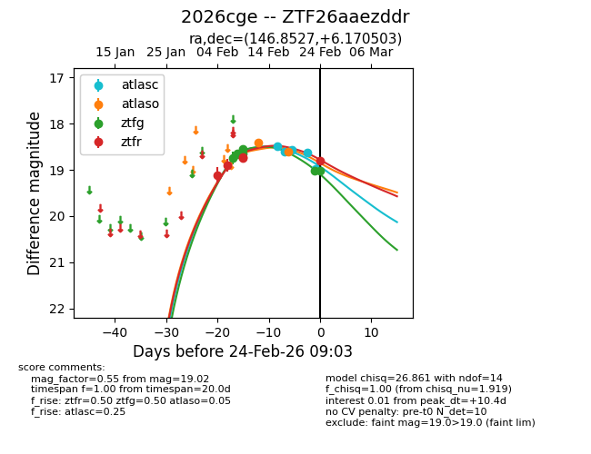
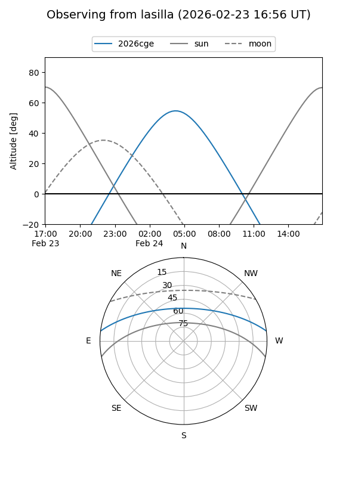
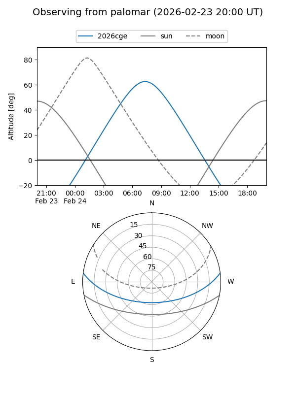
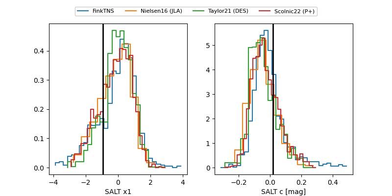

2026cge
Target 2026cge at 2026-02-24 09:08
Aliases and brokers:
FINK: link
Lasair: link
ALeRCE: link
TNS: link
YSE: link
alt names
ZTF26aaezddr (ztf,fink_ztf)
2026cge (tns,yse)
Coordinates:
equatorial (ra, dec) = 146.8527,+6.17050
equatorial (HMS+DMS) = 09:47:24.65,+06:10:13.81
galactic (l, b) = (229.9716,+41.57448)
Flags:
Photometry:
last atlasc=18.98, atlaso=18.61, ztfg=19.02, ztfr=18.79
5 atlasc, 2 atlaso, 7 ztfg, 5 ztfr detections
Lightcurve

Visibility


Additional plots
